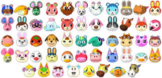

Animal Crossing es una serie de videojuegos acogedores de simulación de vida publicada por Nintendo y creada por Katsuya Eguchi y Hisashi Nogami, en la que el jugador vive en un pueblo habitado por animales antropomórficos, llevando a cabo diversas actividades.
La serie destaca por su sistema de juego abierto y su amplio uso del reloj y el calendario interno en el sistema para simular el paso real del tiempo.
En los títulos de Animal Crossing, el jugador asume el papel de un personaje humano que se muda a una aldea rural poblada de animales antropomorfos, donde vive indefinidamente. El juego es abierto ya que no cuenta con objetivos definidos. Algunas actividades incluyen recolectar artículos, pescar, plantar flores, decorar la vivienda y socializar con los residentes de la aldea. Animal Crossing se caracteriza por el juego en tiempo real, utilizando el reloj y el calendario internos de la consola de videojuegos. Por lo tanto, el paso del tiempo afecta al mundo ficticio y a los eventos que transcurren en él.
La recolección de artículos es una faceta importante de Animal Crossing: el jugador puede explorar la aldea y recolectar objetos, incluidas frutas, conchas marinas y artículos desechados. Casi todos los objetos se pueden vender por bayas, la moneda del juego. Los jugadores recolectan objetos para obtener más bayas, que luego pueden usarse para comprar muebles, ropa, expansiones del hogar y demás artículos. Hay varias herramientas especializadas disponibles para otras actividades como la pesca y la recolección de insectos. Se pueden donar al museo del pueblo artículos especiales, como fósiles y pinturas. El jugador puede optar por socializar con los otros animales residentes participando en una conversación, enviando y recibiendo cartas, haciendo trueques o jugando al escondite. Los residentes pueden entrar o salir de la aldea dependiendo de las acciones del usuario.
Animal Forest para Nintendo 64, publicado solo en Japón el 14 de abril de 2001. En Estados Unidos fue lanzado en 2002 bajo el nombre de Animal Crossing para Nintendo GameCube.
Animal Crossing: Wild World para Nintendo DS, lanzado en Japón el 23 de noviembre de 2005 y llegando al resto de países en los meses posteriores.
Animal Crossing: City Folk o Animal Crossing: Let's Go to the City fue publicado en invierno de 2008 para Nintendo Wii.
Animal Crossing: New Leaf salió a la venta para Nintendo 3DS el 8 de noviembre de 2012 en Japón y llegó a los mercados internacionales a lo largo de 2013.
Animal Crossing: New Horizons fue lanzado mundialmente el 20 de marzo de 2020 para Nintendo Switch.
Todos son animales antropomorfos, es decir, representan a un animal pero actúan como seres humanos. Estos hablan en «Animalés», idioma inventado por el propio juego y que se basa en la alteración del sonido en su habla. También existe el «bebebés».
De izquierda a derecha: Sócrates, Totakeke, Tom Nook, Tendo, Nendo, Canela y Pili.
Tom Nook es un tanuki, dueño de una tienda y corredor de bienes raíces, que se encarga de dar préstamos al jugador para construir y ampliar su casa. Otro personaje destacado es Totakeke, un músico viajero canino basado en el compositor de la serie, Kazumi Totaka, y toca ciertas noches en el club de la ciudad.
En Animal Crossing: New Horizons, Canela hace una aparición como administradora de la comunidad de la ciudad y secretaria de Tom Nook. Permite a los jugadores cambiar la bandera y el tono de la ciudad, así como restablecer ciertos aspectos de la vida de la ciudad (apodos y atuendos de aldeanos). Junto a ella, Tendo y Nendo regentan Nook's Cranny (MiniNook). Hermanas Manitas también ofrece ropa para el personaje y está dirigida por dos hermanas, Pili y Mili. Dos nuevos personajes, Rafa y Rodri, administran Dodo Airlines, el único aeropuerto en la isla desierta.
El Aldeano o Aldeana es el personaje representativo del Jugador de Animal Crossing.
Los vecinos son principales NPC de la serie Animal Crossing. Ellos viven una vida pacífica repartidos por el pueblo de los jugadores. Hacen las mismas cosas que el Jugador, como pescar, encontrar fósiles y recolectar bichos. Los vecinos, como lo sugiere el título de la serie, vienen en una variedad de especies animales, y actualmente existen 488 de ellos.
Hay diferentes personalidades y características encontradas en los vecinos. Todos los vecinos comparten los mismos intereses y pasatiempos, pero algunos son más evidentes en las personalidades individuales que en otros. Hay varias personalidades: Atlético, Esnob, Gruñón y Perezoso, que son personalidades masculinas, y Alegre, Dulce, Presumida y Normal que son personalidades femeninas. Las diferentes personalidades comparten rasgos similares, especialmente los equivalentes masculinos y femeninos. Hay muchas características comunes de los vecinos.